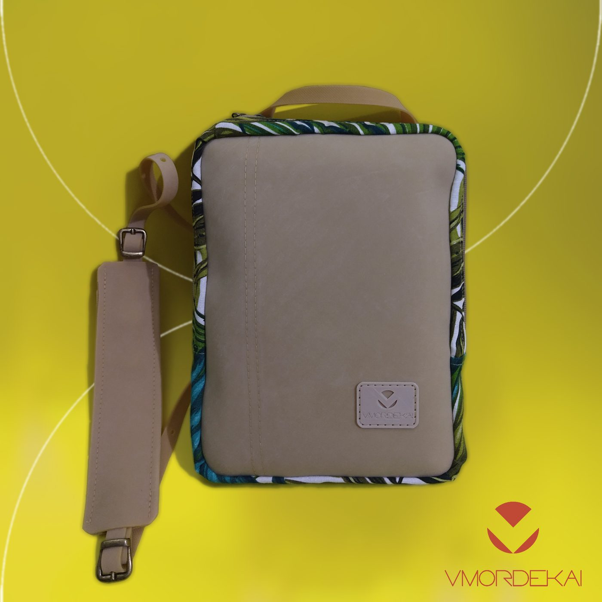

VMK-CON-001 · Conceitual

Versão conceitual da MINIBAG, feita de látex e tecido acquablock (impermeável). Da coleção "Da floresta à cidade": a frente e a alça de látex remetem ao ciclo da borracha amazônico, e a estampa traz folhagens típicas das florestas brasileiras. Mantém o uso da MINIBAG: a tiracolo ou presa no cinto e na perna.